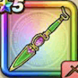

キラーピアス
攻略班 6.0点 / ヴァイパーファングアサシンアタックカオスエッジヒュプノスハントジバリーナ※錬成で強化可能
くわしい特徴
【レベル別習得スキル】 Lv1ヴァイパーファング（消費MP：5）刃に猛毒を宿し敵1体に威力130%の斬撃ダメージを与えたまに猛毒を与える Lv10アサシンアタック（消費MP：8）急所を狙い敵1体に威力160%の斬撃ダメージを与えたまに即死させる Lv15カオスエッジ（消費MP：9）混沌の剣技で敵1体に威力175％の斬撃ダメージを与えたまに混乱させる Lv20ヒュプノスハント（消費MP：11）敵1体が眠り・混乱状態であれば威力280%の斬撃ダメージを与える Lv30ジバリーナ（消費MP：25）行動時に大暴走する魔法陣で敵全体にジバリア属性の呪文微小ダメージを与える Lv35けもの系へのダメージ+10% Lv40きようさ+5 Lv45攻撃時+2%の確率で即死を与える Lv50攻撃力+12錬成スキル改1けもの系へのダメージ+10%改2ツインキラー（消費MP：44）敵全体にランダムな威力の斬撃ダメージを2回与える改3会心率+2%改4錬成ぶき特別演出解放・メガモン討伐結果発表時に特別演出が追加・武器の見た目に特別なエフェクトが追加 【限界突破スキル】 1凸スキルの斬撃・体技ダメージ+5% 2凸スキルの斬撃・体技ダメージ+5% 3凸スキルの斬撃・体技ダメージ+5% 4凸スキルの斬撃・体技ダメージ+5%